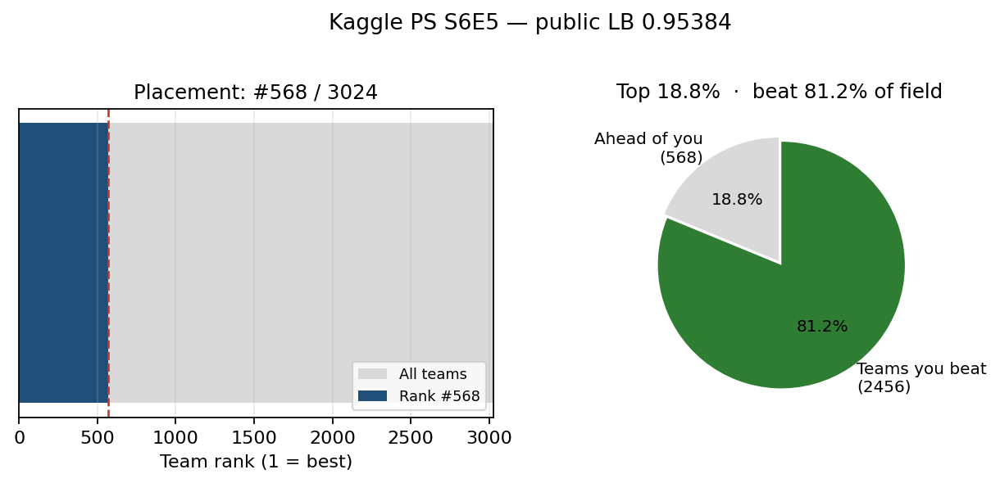
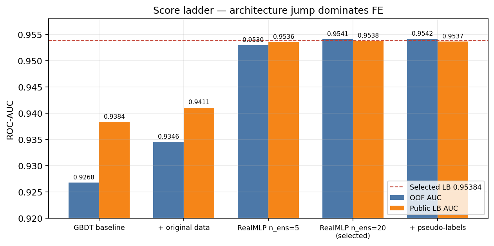
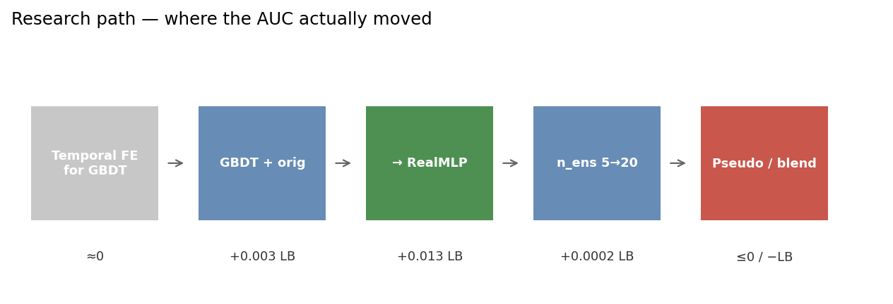
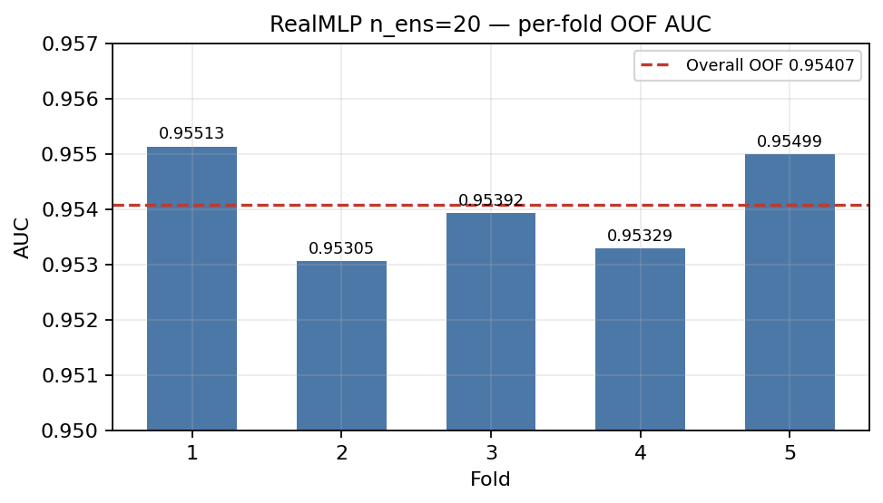
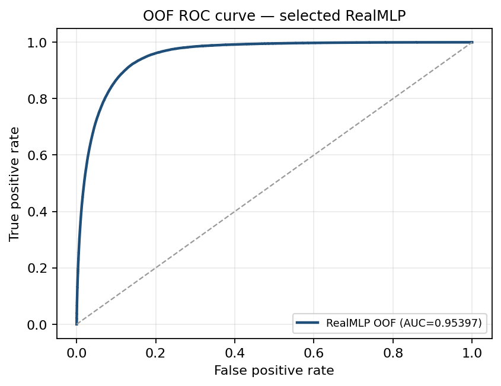
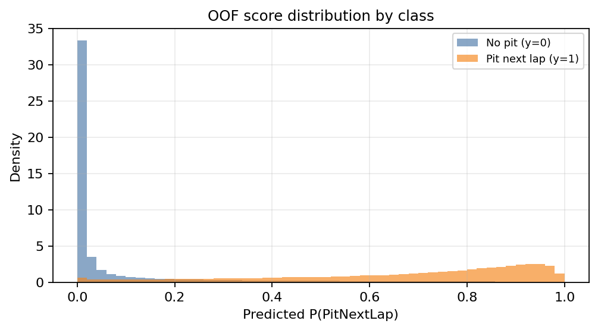
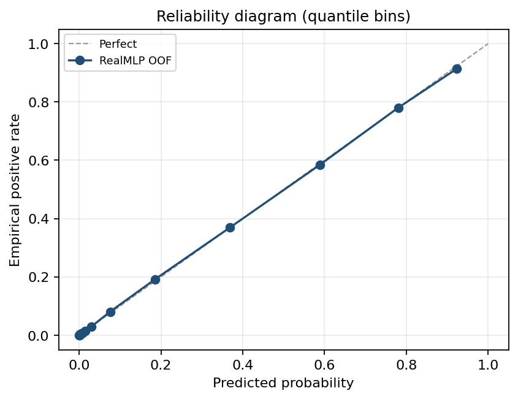

Author: ron1n97
Competition: Predicting
F1 Pit Stops — Playground Series S6E5
Result: 568th / 3024 teams (top 18.8%)
· public LB 0.95384 ROC-AUC
Stack: RealMLP (pytabkit), LightGBM / XGBoost /
CatBoost baselines, Target Encoding
Code: this repository · Kaggle
writeup
Binary classification: given lap-level Formula 1 state, predict
whether the driver pits on the next lap
(PitNextLap). Metric is ROC-AUC.
I finished 568th out of 3024 teams — top 18.8% of the field, beating about 81.2% of teams — with public LB 0.95384. The selected model is a single RealMLP ensemble trained with the competition’s original source dataset. The largest gain was not exotic feature engineering; it was switching architecture from a tuned GBDT stack to RealMLP (+~0.013 public LB).

| Task | Predict PitNextLap ∈ {0, 1} |
| Metric | ROC-AUC |
| Train / test | ~439k / ~188k synthetic playground rows |
| Original source | ~101k rows (f1_strategy_dataset_v4.csv) |
| Field size | 3024 teams |
| My place | #568 |
| Percentile | top 18.8% (rank / teams) |
| Public LB | 0.95384 |
| Selected OOF | 0.95407 (RealMLP n_ens=20) |
Positive rate in train is ~20%. Features include tyre compound and life, stint, position, lap time, cumulative degradation, race progress, and race/year identifiers.

| Approach | OOF AUC | Public LB |
|---|---|---|
| LGB + XGB + CatBoost baseline | 0.9268 | 0.9384 |
| + original dataset | 0.9346 | 0.9411 |
RealMLP n_ens=5 |
0.9530 | 0.9536 |
RealMLP n_ens=20 (selected) |
0.9541 | 0.9538 |
| + pseudo-labeling | 0.9542 | 0.9537 |
Selected public LB on the board: 0.95384 (rounding /
submission variant of the n_ens=20 line).

RealMLP_TD_Classifier from pytabkit —
tabular NN ensemble with periodic linear representations, label
smoothing, and a strong default transform stack. Hyperparameters largely
followed yekenot’s
public notebook; I did not win by inventing a new architecture.
Key knobs in the selected run: n_ens=20, hidden
[512, 256, 128], SiLU, lr=0.019, PLR heads,
label smoothing 0.01.
Race×Compound and
Race×YearArithmetic interactions, floor-factorized categorical embeddings for numerical columns, count encodings, quantile bins (RaceProgress ×200, LapTime ×7), and the TE combos above. Temporal lags / rolling pace features helped almost nothing on an LGB proxy and hurt RealMLP OOF when added wholesale.

Fold AUCs for n_ens=20: 0.95513, 0.95305, 0.95392,
0.95329, 0.95499 → overall OOF 0.95407.



Discrimination is strong; calibration is usable but AUC only cares about ranking — no post-hoc calibration was needed for the leaderboard metric.
| Experiment | Outcome |
|---|---|
| Heavy temporal FE (lags, rolling lap times, degradation rates) | ≈0 on LGB proxy; RealMLP OOF dropped (~0.953→0.952) |
| RealMLP ↔︎ GBDT blends (90/10 … 70/30) | All ≤ pure RealMLP (pred correlation ~0.92) |
| Pseudo-labeling confident test rows | OOF up, public LB down |
| Optuna on LGB before architecture search | Plateau ~0.941 LB — wrong bottleneck |
Top finishers used 100–200+ model logit stacks. This note documents a single-model path that still cleared the top fifth of the field.
pip install -r requirements.txt
python download_data.py
python train_realmlp.py --no-submit
python scripts/make_figures.pyFull code and experiment log: repository root · docs/experiment_log.md.